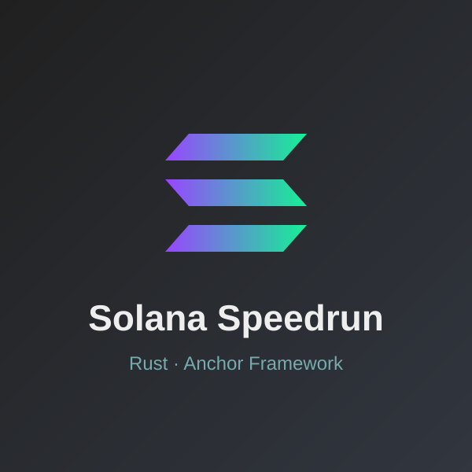
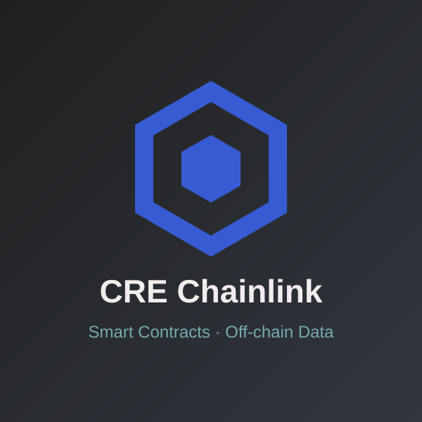
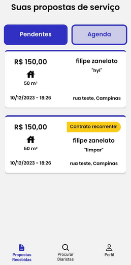
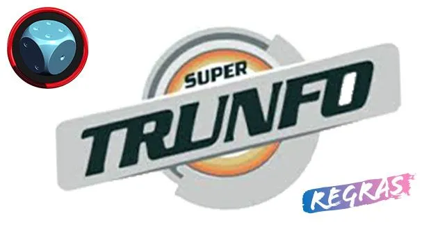
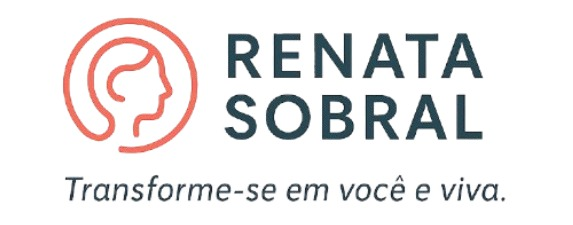
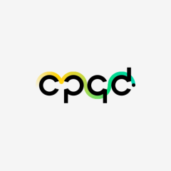
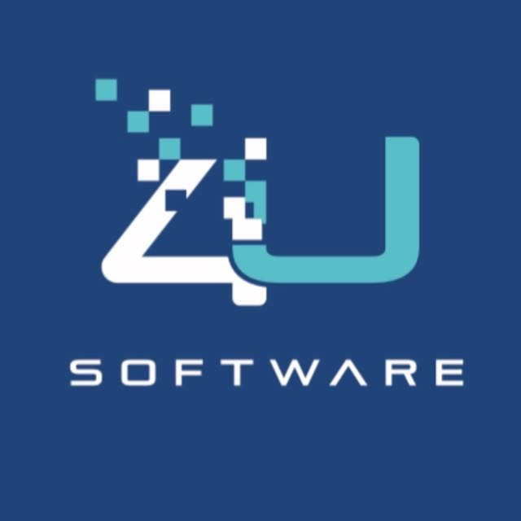
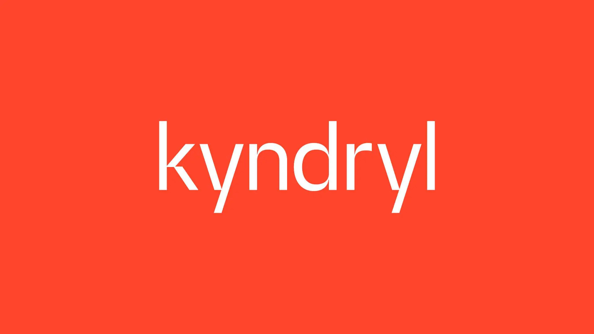

My Skills
Knowledge and Technologies I’ve worked with
• Degree in Information Systems
• Postgraduate in AI for Devs
• Intermediate English
• 2+ years of Back-End development with Java (Spring) and Node.js (NestJS/Express)
• 2+ years working with React and Angular on the Front-End
• 1+ year building and integrating Smart Contracts on Blockchain (EVM and Solana)
• Volunteer at the "Mudando Minha Historia" project
Knowledge and Technologies I’ve worked with
Portfolio

• Solana Speedrun challenges
• Program deployed with the Anchor Framework
• Development in Rust on the Solana network

• Exploring the Chainlink Runtime Environment (CRE)
• Integration of smart contracts with off-chain data and services

An application designed for domestic employers to organize their schedules and find services. Technologies used: TypeScript, Node.js, Docker, GoLang, PostgreSQL databases.

• Fully functional routes for playing Super Trunfo.
• User/Admin creation and management.
• Card and Deck creation features.
• Full match functionality for interactive gameplay.

• Smooth anchor-based navigation
• Mobile-friendly responsive menu
• Scroll-triggered animations
• Modular Angular architecture
• Fully responsive layout
Professional

• Working on Project Neo, a Decentralized Marketplace (dApp) focused on trading telecommunications assets and services, developing back-end and Web3 infrastructure solutions using TypeScript, Ethers.js and Smart Contracts in Solidity.
• Responsible for implementing and integrating Smart Contracts on the blockchain network, ensuring the security and transparency of telecommunications asset transactions in the marketplace.
• Responsible for increasing the efficiency of the development workflow by at least 20% by improving CI/CD pipelines and implementing automated tests with Vitest, ensuring a minimum coverage of 95% across the entire application.
• Use of Docker for application containerization, optimizing the development environment and ensuring parity and consistency between staging and production environments.

• Development and maintenance of web systems on the Gedui platform, a multifunctional school environment that allows the registration of activities, insertion of notes and updating of study materials.
• Working on the backend with Node.js (Express) and Java (Spring Boot), creating and optimizing RESTful APIs and microservices to ensure scalability and performance.
• Implementation of new features and code refactoring, improving usability and efficiency of existing features.
• Frontend developed with React.js, providing a dynamic and responsive interface for users.
• Management of MySQL databases, performing queries and optimizing the structure to ensure efficiency in data storage and retrieval.
• Use of Docker for containerization and deployment of services, ensuring portability and consistency in the development environment.
• Versioning with Git, applying good practices such as Git Hub for code organization and team collaboration.
• Agile methodologies (Scrum/Kanban) for organizing demands, participating in daily meetings for technical alignment and problem solving.
• Development of the MMH platform with Java (Spring Boot) and Node.js (NestJS), creating and maintaining scalable applications.
• Implementation of REST APIs and microservices with Spring Boot, using standards such as DTOs, Services, Repositories, ensuring separation of responsibilities and ease of code maintenance.
• Development of functionalities for creating, editing, listing, filtering and deleting users on the MMH platform, a project aimed at encouraging young people to enter technical colleges through a structured selection process.
• Management of MySQL databases, carrying out queries to support end users.
• Management of MySQL in Docker containers, ensuring portability and scalability of applications.
• Use of Git for versioning in a distributed development environment, applying Git Flow to organize branches.
• Collaboration in an agile team, using Scrum and Kanban, participating in code reviews and resolving critical and non-critical bugs across the entire code base.

• User control and maintenance. • Level 1 Support Monitoring (SQL database installation, resolving profile permission issues, daily database handling for service automation). • Management of administrator user profiles on Windows and UNIX servers. • Daily participation in SQL/DB2 server maintenance. • Participation in Agile methodology meetings.
Copyright © 2025 by Leonardo Barros. All rights reserved.